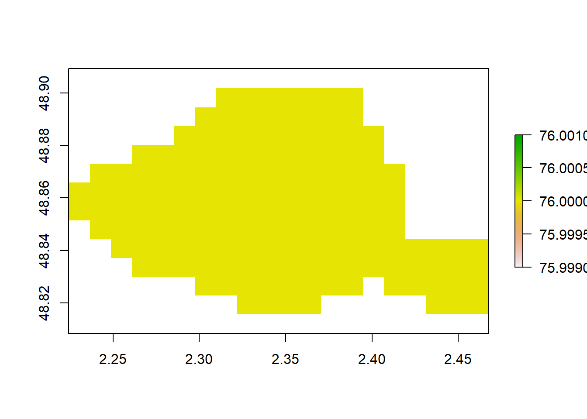

Chapter 2 Les données ouvertes en France
2.1 Les données ouvertes
L’ouverture des données est un mouvement qui est apparu il y a au moins 10 ans en s’inspirant des principes de développement Open Source (ouverture du code informatique). Pour définir l’open data, il faut se reférer à la définition plus large du contenu ouvert proposée par l’Open Knwoledge Foundation qui peut se résumer comme suit: “Open means anyone can freely accesss, use, modify, and share for any purpose”. On peut retrouver la définition complète ici.
Neufs critères ont été fixés pour que les données soients considérées comme ouvertes:
- prmaires: les données ouvertes sont publiées telles qu’elles sont collectées à la source (brutes, non aggrégées, niveau de granularité le plus fin possible).
- fraiches: les données doivent être disponibles dès qu’elles sont produites
- accesibles: les données doivent être accessibles et utilisables par le plus grand nombre d’usagers possiblme.
- lisibles par les machines: les données être traitées automatiquement par des machines
- non discriminatoires: les données peuvent être utilisées par tous les potentiels usages sans la nécessité d’un enregistrement
- format ouvert: le format des données ne doit pas être la propriété d’une organisation particulière
- license ouverte: les données doivent être placées dans le domaine public
2.2 Les démarches d’ouverture des données en France
Les démarches d’open data se développent de plus en plus vite au niveau des collectivités. Ce mouvement a été accéléré avec la promulgation de la loi République Numérique qui incite les différentes collectivités locales (communes, EPCI, départements et régions) à publier leurs données. Pour celà, ils ont été accompagnés par plusieurs dispositifs publics (OpenDataLocale, Vlidata…) ainsi qu’une implication du secteur privé en matière de conseil, formation, mise à disposition de plateformes de publication et d’exploitation… Cette politique d’ouverture des données est pilotée par la mission Etalab.
Rapport intéressant: https://datactivist.coop/ardeche/rapport/partie1.html
2.2.1 Organismes publics
2.2.1.1 Opendata france
Opendata Frace est une association créée en 2013 à Toulouse et a pour but de regrouper et soutenir les collectivités engagés activement dans une démarche d’ouverture des données publiques. Les actions de cette association consistent en: - Accompagner et aider les collectivités à lancer ou dévélopper leurs projets opendata - Animer des rencontres ou des ateliers permettant aux participants de progrsser dans leur démarche d’ouverture des données - Communiquer autour de l’opendata
2.2.1.2 Opendata locale
Opendata France a été missionnée pour soutenir les petites et moyennes communes dans leur démarche d’ouvertue des données dans le cadre du projet Opendata Locale. Ceci a permis de produire des supports méthodologiques, pédagogiques et techniques qui permettent d’assurer la mutualisation des connaissances et l’harmonisation et normalisation des données.
2.2.1.3 Observatoire de l’Opendata
OpendataFrance a mis en place un observatoire de l’open data dans les territoires pour connaitre et comprendre l’avancement dees démarches d’ouverture des données publiques dans les territoires: http://www.observatoire-opendata.fr/ Les données sont collectées majoritairement de manière automatique. L’observatoire propose aussi des indicateurs qui permettent de quantifier et qualifier l’opendata publiée. Il permet ainsi d’évaluer en continu l’ouverture des données dans les collectivités territoriales. Il produit des restitutions sous diférents formats: documents de synthèse eta analyse, outils de visualisation interactive et les bases de données brutes. Ce projet a été élaboré en partenariat avec la Caisse des Dépôts et Etalab.
2.2.1.4 Etalab
Etalab Fait partie de la Direction interministérielle du numérique de l’Etat. Sa mission consiste en la coordination, la conception et mise en oeuvre de la stratégie de l’état dans le domaine de la donnée. Il coordonne la politique d’ouverture et de partage des données publiques. Il développe et anime la plateforme d’open data data.gouv.fr destinée à rassembler et à mettre à disposition librement l’ensemble des informations publiques de l’Etat, de ses établissments publics, les collectivités territoriales… Etalab contribue ) la promotion des sciences des données et de l’intelligence artificielle dans la sphère publique. Fing
2.2.1.5 Ademe
2.2.1.6 INSEE
2.2.2 Entreprises
2.3 Sources par thématiques
Nous allons respecter la catgéorisation des thématiques proposée par data.gouv:
- Agriculture et alimentaire https://agreste.agriculture.gouv.fr/agreste-web/disaron/GraFraChap1.2/detail/ https://agreste.agriculture.gouv.fr/agreste-web/disaron/GraFraIntegral/detail/
- Culture, Communication
- Comptes, économie et emploi
- Education, recheche, formation
- International, europe
- Environnement, énergie, logement
- santé et social
- société, droit, institutions
- Territoires, Transports, Tourisme
- Urbanisme
- Transports
- Foncier
- Tourisme
2.4 Agrégation des données
Afin de croiser différents indicateurs géospatiaux à l’échelle de la france, nous avons choisi de générer une grille régulière du territoire français et aggréger les différentes données collectées à l’échelle de cette grille. Afin de pouvoir démontrer plus facilement un prototype, nous proposons dans un premier temps un prototype à l’échelle de Paris.
2.4.1 Extraction des limites administratives
# limites régionales
regions <- rgdal::readOGR(dsn = "data/FrenchOpenData/territoires/limites administratives/regions-20180101-shp",
layer = "regions-20180101",
use_iconv = TRUE,
encoding="UTF-8")## OGR data source with driver: ESRI Shapefile
## Source: "D:\OpenGeoKPI\OpenDataBook-France\data\FrenchOpenData\territoires\limites administratives\regions-20180101-shp", layer: "regions-20180101"
## with 18 features
## It has 5 fields# limites départementales
departements <- rgdal::readOGR("data/FrenchOpenData/territoires/limites administratives/contours-simplifies-des-departements-francais-2015.geojson",
use_iconv = TRUE,
encoding="UTF-8")## OGR data source with driver: GeoJSON
## Source: "D:\OpenGeoKPI\OpenDataBook-France\data\FrenchOpenData\territoires\limites administratives\contours-simplifies-des-departements-francais-2015.geojson", layer: "contours-simplifies-des-departements-francais-2015"
## with 101 features
## It has 12 fields, of which 1 list fields2.4.2 Génération d’une grille à l’échelle de Paris
library(sf)
library(raster)
# définir la granularité
r <- raster(ncol=20, nrow=12)
# définir l'étendu
extent(r) <- extent(departements_paris)
# rasterizer le département de paris
departements_paris_ras<- rasterize(departements_paris, r, "nom_dept")
# plot pour voir ce que ça donne
sp::plot(departements_paris_ras, border = grey(0.6))
## Extract polygons
departements_paris_ras_poly <- raster::rasterToPolygons(departements_paris_ras)
# Add polygons id
departements_paris_ras_poly$cell_ID = 1:nrow(departements_paris_ras_poly@data)
# plot pour voir ce que ça donne
sp::plot(departements_paris_ras_poly, border = grey(0.6))# get the centroids and then convert them to a SpatialPointsDataFrame
library(rgeos)
departements_paris_ras_poly_centroid <- SpatialPointsDataFrame(gCentroid(departements_paris_ras_poly, byid=TRUE),
departements_paris_ras_poly@data, match.ID=FALSE)
departements_paris_ras_poly_centroid$centroid_lng = coordinates(departements_paris_ras_poly_centroid)[,"x"]
departements_paris_ras_poly_centroid$centroid_lat = coordinates(departements_paris_ras_poly_centroid)[,"y"]